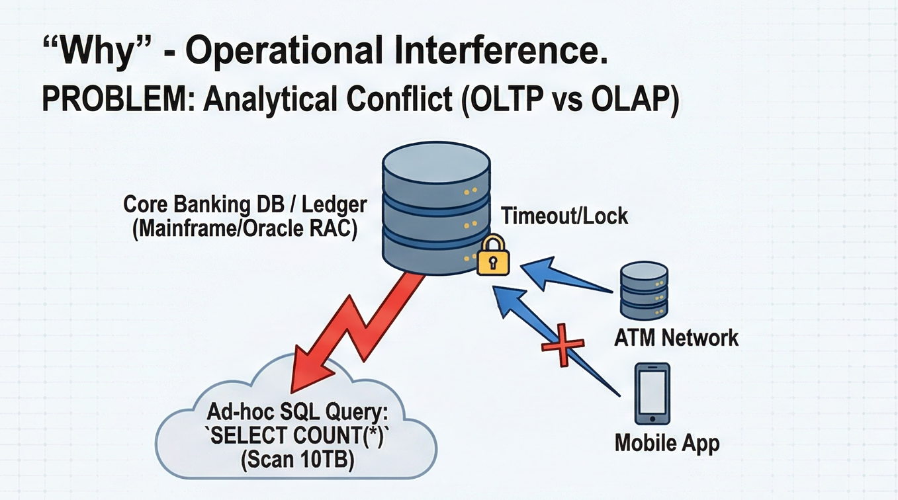
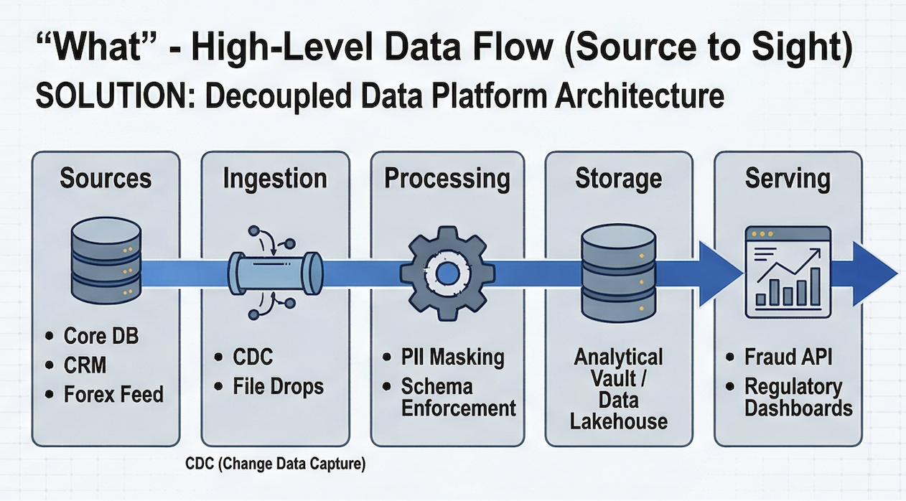
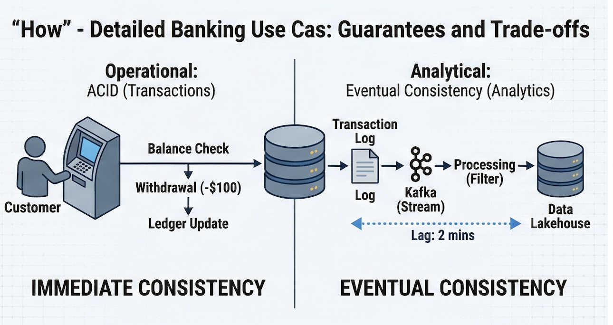
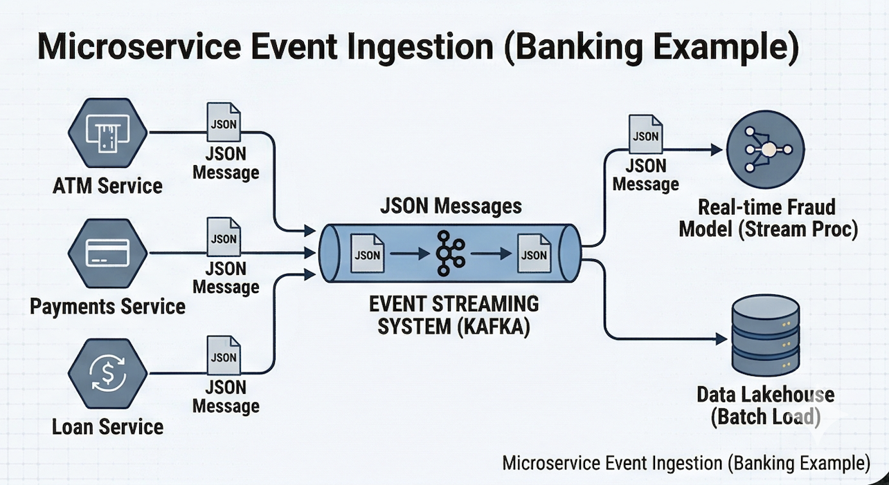

Modern Data Platform Overview
Understand the big picture of how enterprise data platforms work.
Why: The Problem of Operational Interference
Analytical conflicts arise when complex SQL queries (OLAP) compete for resources with transactional systems (OLTP).
Analytical Conflict (OLTP vs OLAP)
Scanning terabytes of data for an ad-hoc report on a core production database causes timeouts and locks, preventing real-time transactions like ATM withdrawals or mobile app payments.
While read replicas protect the Primary Writer, they are architecturally unsuitable for OLAP workloads due to Row-Store I/O inefficiencies and Replication Lag, which ultimately degrades the 'Read' experience for end-users

What: High-Level Data Flow (Source to Sight)
A decoupled data platform architecture separates sources from analytics to resolve resource conflicts.
The 5-Layer Solution
Moving data from Core DBs and CRMs through dedicated Ingestion, Processing, and Storage layers before serving it to Dashboards and APIs.

How: Guarantees and Trade-offs
Understanding the fundamental difference between Immediate and Eventual consistency models.
Operational vs Analytical Guarantees
Operational systems require Immediate Consistency (ACID) for transactions, while analytical systems accept Eventual Consistency (Lag) for massive scale and decoupling.

Microservice Event Ingestion(Banking Example)
This diagram zooms into one implementation: Kafka as a unified ingestion system. It shows how distinct banking services (ATM, Payments, Loans) all publish JSON messages to the same cluster.

🏗️ Closing Thought
"A modern data platform is not a single tool, but a decoupled ecosystem. Its success is measured by how effectively it resolves the conflict between operational speed and analytical depth."
The Architectural Manifesto
"By treating data as a first-class product and isolating it from operational pressure, we transform raw events into a reliable foundation for both human decision-makers and autonomous AI agents."